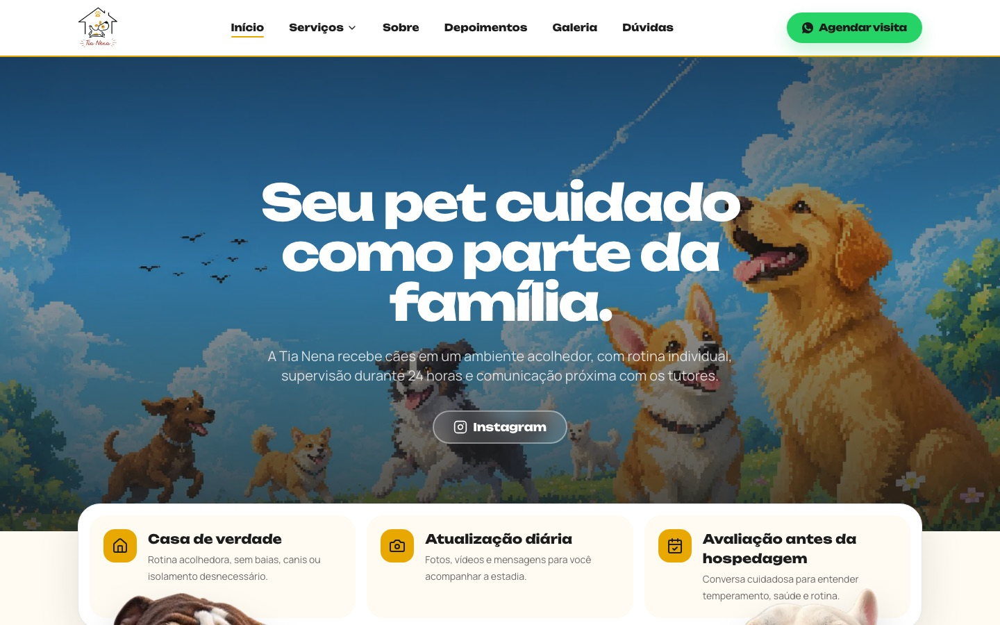
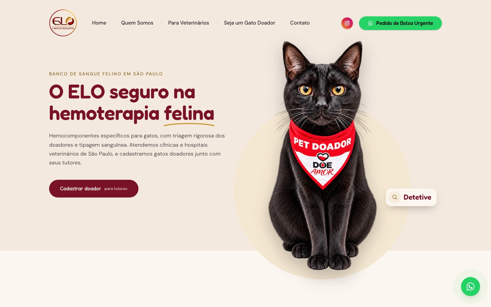
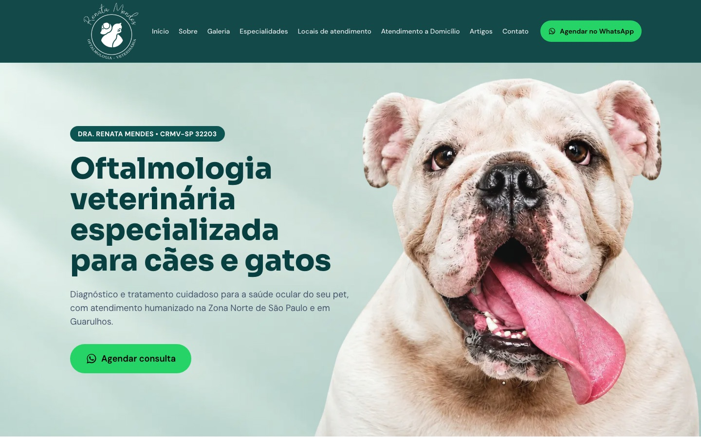
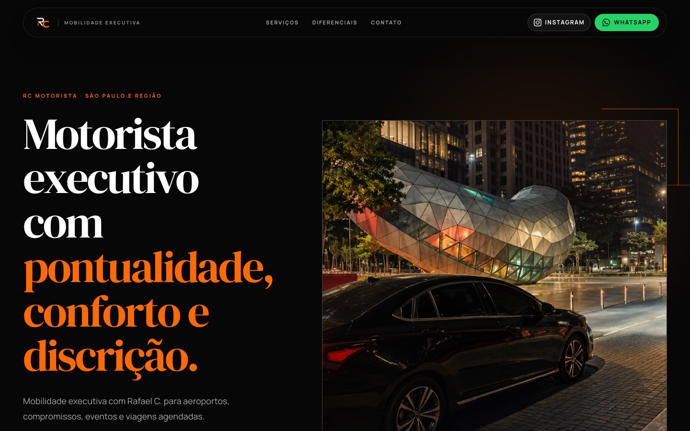
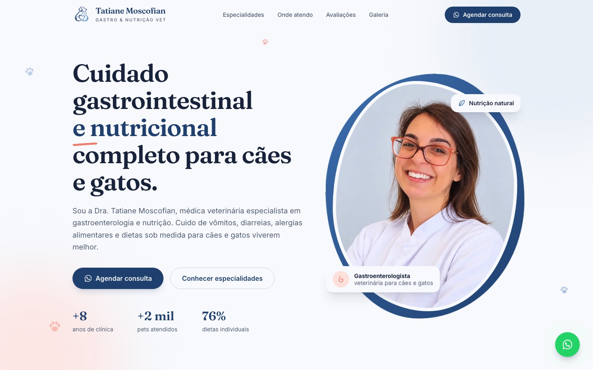
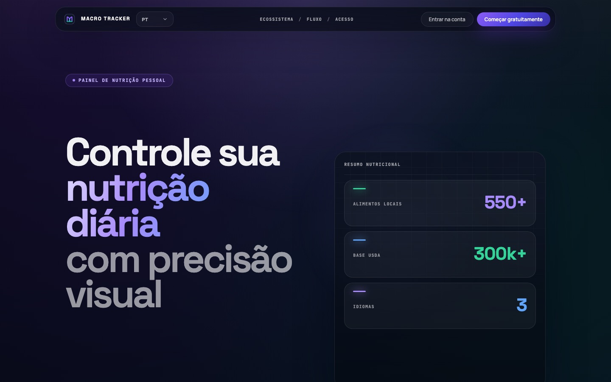
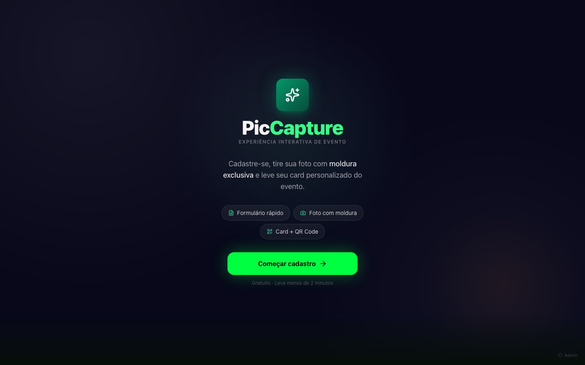

Construo APIs em Python e sites que viram cliente, do banco de dados ao último pixel.







No ar: Tia NenaSobre
Sou estudante de Engenharia de Software na FIAP e desenvolvedor freelancer. Gosto do lado de trás: APIs em Python com FastAPI e Django, bancos PostgreSQL e MongoDB, tarefas agendadas com Celery. Mas também entrego a parte da frente, com landing pages que transformam visita em conversa no WhatsApp.
- Sites de clientes no ar
- 5
- Repositórios públicos
- 19
- Semestre na FIAP
- 2º
Projetos de 2026
Clientes, faculdade e estudos
ELO Hemoterapia
Site de um banco de sangue felino em São Paulo, com cadastro de gatos doadores e pedido de bolsa urgente.
Site ↗ Repo privado
Renata Oftalmo
Site de oftalmologia veterinária para cães e gatos, com agendamento direto pelo WhatsApp.
Site ↗ Repo privado
Tati Gastro
Site de gastroenterologia e nutrição veterinária, com especialidades, locais de atendimento e avaliações.
Site ↗ Repo privado
FluxRate
API de cotações de moedas e cripto com sincronização agendada a cada 5 minutos (Celery e Redis) e dashboard em React.
Ferramentas que uso
no dia a dia:
- Python
- FastAPI
- Django
- PostgreSQL
- MongoDB
- React
- Next.js
- TypeScript
- Docker
- Vercel
Skills
Back-end
APIs REST com autenticação JWT, modelagem relacional e tarefas em segundo plano.
Front-end
Landing pages e dashboards responsivos, com foco em conversão e acessibilidade.
DevOps e ferramentas
Deploy, versionamento e infraestrutura. Os itens com ponto laranja estão em estudo agora.
Trajetória
Formação, experiência e eventos
-
2026 · atual
Engenharia de Software · FIAP
Cursando o 2º semestre. Python, front-end, desenvolvimento web e cálculo aplicado.
-
2026 · atual
Desenvolvedor freelancer
Sites e sistemas para clientes, com landing pages focadas em conversão por WhatsApp: Tia Nena, ELO Hemoterapia, Renata Oftalmo, Tati Gastro e RC Motorista.
-
Jun 2026